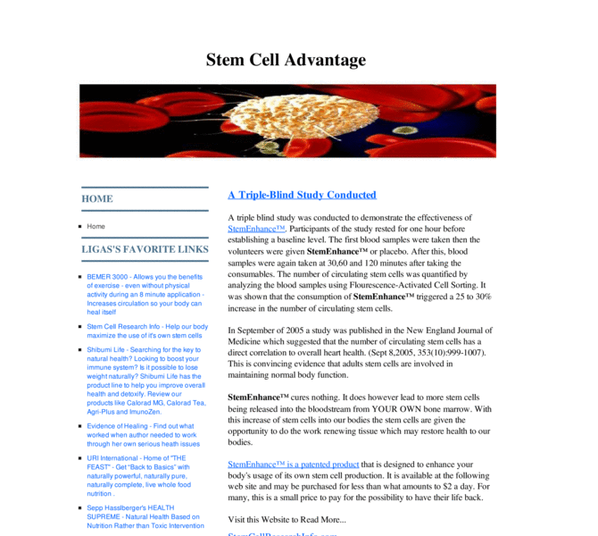

Previewing: The Stem Cell Advantage: Use Your Own - Weblog Previewing: The Stem Cell Advantage: Use Your Own - Weblog 
Use the left/right red arrow controls to navigate through this ring - Click the preview image to visit the member site.

Articles & research related to stem cell research. The author of this site has uncovered information for those struggling with diseases while waiting in the wings for the stem cell controversy to abate. The information states that we can have the ability to utilize our own stem cells through the use of a new patented natural product that was finally made available to the public in Nov, 20
The Stem Cell Advantage: Use Your Own - Weblog owned by:
 emjae emjae
A member of the original webring since 06/18/2006.
|
|